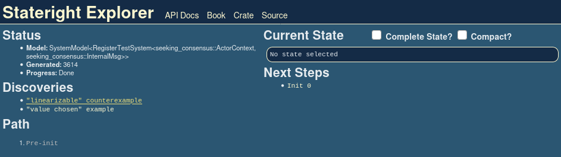
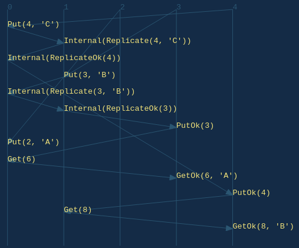

Chapter 3: Seeking Consensus
In the last chapter we fixed a bug caused by the network's susceptibility to message redelivery, but our solution could only run on a single server. Introducing a second server would break linearizability as the system failed to replicate information between servers.
In this chapter we introduce a simple replication protocol in an attempt to address that shortcoming.
Once again, we start by initializing a new Rust project:
mkdir seeking-consensus
cd seeking-consensus
cargo init
Next we add dependencies to Cargo.toml. Notice that we now need to include
the serde package.
[package]
name = "seeking-consensus"
version = "0.1.0"
edition = "2018"
[dependencies]
env_logger = "0.7"
serde = "1.0"
serde_json = "1.0"
stateright = "0.22.0"
By now you have the hang of implementing basic actor systems in Stateright, so
we'll defer the full main.rs source code listing until later in the chapter.
A Replication Protocol
First we get to decide on a replication protocol. Give this some thought, and see if you have ideas.
Exercise: Yes, really. Take some time to think about how you might add replication.
Done? Great!
For this example, we'll proceed with a protocol that simply involves forwarding the value to every peer server before replying to the client, thereby ensuring the servers agree on the value. This might be the protocol that you envisioned as well.
Implementation Walkthrough
The first notable difference is the need to introduce a message type for replication.
#[derive(Clone, Debug, Hash, Eq, PartialEq)]
#[derive(Deserialize, Serialize)]
enum InternalMsg {
Replicate(RequestId, char),
ReplicateOk(RequestId),
}
The server defers sending a PutOk message until replicas reply, but
Stateright actors are nonblocking, so they must manage some additional state:
- the ID of the request, against which replica replies are matched (to guard against late responses),
- the ID of the client that made the request (to facilitate replying later),
- and the set of servers that have acknowledged the replicated value (to facilitate waiting until all have replied).
#[derive(Clone, Debug, Hash, PartialEq)]
struct ActorState {
value: char,
delivered: BTreeSet<(Id, RequestId)>,
in_flight_put: Option<PutState>,
}
#[derive(Clone, Debug, Hash, PartialEq)]
struct PutState {
req_id: RequestId,
src: Id,
peer_acks: BTreeSet<Id>,
}
We are now ready to implement the protocol.
fn on_msg(&self, _id: Id, state: &mut Cow<Self::State>,
src: Id, msg: Self::Msg, o: &mut Out<Self>) {
match msg {
RegisterMsg::Put(req_id, value) if state.in_flight_put.is_none() => {
if state.delivered.contains(&(src, req_id)) { return }
let mut state = state.to_mut();
state.value = value;
state.delivered.insert((src, req_id));
state.in_flight_put = Some(PutState {
req_id,
src,
peer_acks: Default::default(),
});
for &peer_id in &self.peer_ids {
o.send(peer_id,
RegisterMsg::Internal(
InternalMsg::Replicate(req_id, value)));
}
// Will not reply w/ `PutOk` until all replicas ack.
}
RegisterMsg::Get(req_id) => {
o.send(src, RegisterMsg::GetOk(req_id, state.value));
}
RegisterMsg::Internal(InternalMsg::Replicate(req_id, value)) => {
if state.delivered.contains(&(src, req_id)) { return }
let mut state = state.to_mut();
state.value = value;
state.delivered.insert((src, req_id));
o.send(src,
RegisterMsg::Internal(InternalMsg::ReplicateOk(req_id)));
}
RegisterMsg::Internal(InternalMsg::ReplicateOk(req_id)) => {
if state.delivered.contains(&(src, req_id)) { return }
let mut state = state.to_mut();
if let Some(put) = &mut state.in_flight_put {
if req_id != put.req_id { return }
put.peer_acks.insert(src);
if put.peer_acks == self.peer_ids {
o.send(put.src, RegisterMsg::PutOk(req_id));
state.in_flight_put = None;
}
}
}
_ => {}
}
}
Now the big question: does this protocol solve the problem we ran into last chapter?
Unfortunately achieving linearizability involves a bit more sophistication, and Stateright identifies a sequence of steps that are not linearizable. The sequence is nontrivial and demonstrates why a model checker is so useful for implementing distributed systems.
// Fails if there are 3 clients.
let checker = RegisterTestSystem {
servers: vec![
ActorContext { peer_ids: vec![Id::from(1)].into_iter().collect() },
ActorContext { peer_ids: vec![Id::from(0)].into_iter().collect() },
],
client_count: 3,
.. Default::default()
}.into_model().checker()
.spawn_dfs().join(); // TRY IT: Comment out this line, and uncomment
//.serve("0:3000"); // the next to load Stateright Explorer.
//checker.assert_properties(); // TRY IT: Uncomment this line, and the test will fail.
checker.assert_discovery("linearizable", vec![
Deliver { src: Id::from(4), dst: Id::from(0), msg: Put(4, 'C') },
Deliver { src: Id::from(0), dst: Id::from(1), msg: Internal(Replicate(4, 'C')) },
Deliver { src: Id::from(1), dst: Id::from(0), msg: Internal(ReplicateOk(4)) },
Deliver { src: Id::from(3), dst: Id::from(1), msg: Put(3, 'B') },
Deliver { src: Id::from(1), dst: Id::from(0), msg: Internal(Replicate(3, 'B')) },
Deliver { src: Id::from(0), dst: Id::from(1), msg: Internal(ReplicateOk(3)) },
Deliver { src: Id::from(1), dst: Id::from(3), msg: PutOk(3) },
Deliver { src: Id::from(2), dst: Id::from(0), msg: Put(2, 'A') },
Deliver { src: Id::from(3), dst: Id::from(0), msg: Get(6) },
Deliver { src: Id::from(0), dst: Id::from(3), msg: GetOk(6, 'A') },
Deliver { src: Id::from(0), dst: Id::from(4), msg: PutOk(4) },
Deliver { src: Id::from(4), dst: Id::from(1), msg: Get(8) },
Deliver { src: Id::from(1), dst: Id::from(4), msg: GetOk(8, 'B') },
]);
Stateright Explorer
It's not immediately clear why the sequence of steps identified by Stateright violates linearizability. Luckily Stateright includes a web UI that can help you understand scenarios such as this one.
Stateright Explorer is started by calling
serve(...).
You can easily do this by following the directions in the first // TRY IT line,
which will suspend the test when it is next run, allowing you to load
http://localhost:3000 in your web browser to debug.
Tip: Model checking with Stateright Explorer is breadth-first, as that tends to find shorter discovery paths than depth-first search. One downside of this approach is that breadth-first search consumes more memory, so Explorer works best with relatively small state spaces (hundreds of thousands of states rather than millions of states, for example).
When you load Stateright Explorer, you'll see the checker status in the upper
left corner. Within a few seconds the checker should add "linearizable" counterexample to its list of discoveries.

Click that link to load the discovery.

The first thing you might notice is the sequence diagram.

Tracing backwards from the last event, we can see why linearizability is violated:
GetOk(8, 'B')indicates that'B'is the earliest write finishing before the read. Also, no operations are concurrent with the read.PutOk(4)was in response to the long runningPut(4, 'C')operation, indicating that the value'C'must have been written at some point between invocation and response. Unlike the read, the precise sequencing of this write in relation to other operations is indeterminate due to concurrency).GetOk(6, 'A')indicates that'A'is the earliest write finishing before that read. Only the write of'C'is concurrent with the start and end of the read, so it's possible that the write took effect before or after the read took effect.
We don't have to trace any further back, as those observations above highlight
the anomaly: 'A' had been the most recent write, then 'C' may or may not
have been written next (as the concurrency allows different linearizations),
and finally 'B' was read. No linearization of concurrent operations can
reconcile this anomaly, so the protocol is not linearizable. QED.
Complete Implementation
Here is the complete implementation for main.rs:
use serde::{Deserialize, Serialize};
use stateright::actor::{*, register::*};
use std::borrow::Cow;
use std::collections::BTreeSet;
use std::net::{SocketAddrV4, Ipv4Addr};
type RequestId = u64;
#[derive(Clone)]
struct ActorContext {
peer_ids: BTreeSet<Id>,
}
#[derive(Clone, Debug, Hash, Eq, PartialEq)]
#[derive(Deserialize, Serialize)]
enum InternalMsg {
Replicate(RequestId, char),
ReplicateOk(RequestId),
}
#[derive(Clone, Debug, Hash, PartialEq)]
struct ActorState {
value: char,
delivered: BTreeSet<(Id, RequestId)>,
in_flight_put: Option<PutState>,
}
#[derive(Clone, Debug, Hash, PartialEq)]
struct PutState {
req_id: RequestId,
src: Id,
peer_acks: BTreeSet<Id>,
}
impl Actor for ActorContext {
type Msg = RegisterMsg<RequestId, char, InternalMsg>;
type State = ActorState;
fn on_start(&self, _id: Id, _o: &mut Out<Self>) -> Self::State {
ActorState {
value: '?',
delivered: Default::default(),
in_flight_put: None,
}
}
fn on_msg(&self, _id: Id, state: &mut Cow<Self::State>,
src: Id, msg: Self::Msg, o: &mut Out<Self>) {
match msg {
RegisterMsg::Put(req_id, value) if state.in_flight_put.is_none() => {
if state.delivered.contains(&(src, req_id)) { return }
let mut state = state.to_mut();
state.value = value;
state.delivered.insert((src, req_id));
state.in_flight_put = Some(PutState {
req_id,
src,
peer_acks: Default::default(),
});
for &peer_id in &self.peer_ids {
o.send(peer_id,
RegisterMsg::Internal(
InternalMsg::Replicate(req_id, value)));
}
// Will not reply w/ `PutOk` until all replicas ack.
}
RegisterMsg::Get(req_id) => {
o.send(src, RegisterMsg::GetOk(req_id, state.value));
}
RegisterMsg::Internal(InternalMsg::Replicate(req_id, value)) => {
if state.delivered.contains(&(src, req_id)) { return }
let mut state = state.to_mut();
state.value = value;
state.delivered.insert((src, req_id));
o.send(src,
RegisterMsg::Internal(InternalMsg::ReplicateOk(req_id)));
}
RegisterMsg::Internal(InternalMsg::ReplicateOk(req_id)) => {
if state.delivered.contains(&(src, req_id)) { return }
let mut state = state.to_mut();
if let Some(put) = &mut state.in_flight_put {
if req_id != put.req_id { return }
put.peer_acks.insert(src);
if put.peer_acks == self.peer_ids {
o.send(put.src, RegisterMsg::PutOk(req_id));
state.in_flight_put = None;
}
}
}
_ => {}
}
}
}
#[cfg(test)]
mod test {
use super::*;
use stateright::*;
use InternalMsg::{Replicate, ReplicateOk};
use RegisterMsg::{Get, GetOk, Internal, Put, PutOk};
use SystemAction::Deliver;
#[test]
fn appears_linearizable_in_limited_scenarios() {
// Succeeds if there are 2 clients.
let checker = RegisterTestSystem {
servers: vec![
ActorContext { peer_ids: vec![Id::from(1)].into_iter().collect() },
ActorContext { peer_ids: vec![Id::from(0)].into_iter().collect() },
],
client_count: 2,
.. Default::default()
}.into_model().checker().spawn_bfs().join();
checker.assert_properties();
}
#[test]
fn not_generally_linearizable() {
// Fails if there are 3 clients.
let checker = RegisterTestSystem {
servers: vec![
ActorContext { peer_ids: vec![Id::from(1)].into_iter().collect() },
ActorContext { peer_ids: vec![Id::from(0)].into_iter().collect() },
],
client_count: 3,
.. Default::default()
}.into_model().checker()
.spawn_dfs().join(); // TRY IT: Comment out this line, and uncomment
//.serve("0:3000"); // the next to load Stateright Explorer.
//checker.assert_properties(); // TRY IT: Uncomment this line, and the test will fail.
checker.assert_discovery("linearizable", vec![
Deliver { src: Id::from(4), dst: Id::from(0), msg: Put(4, 'C') },
Deliver { src: Id::from(0), dst: Id::from(1), msg: Internal(Replicate(4, 'C')) },
Deliver { src: Id::from(1), dst: Id::from(0), msg: Internal(ReplicateOk(4)) },
Deliver { src: Id::from(3), dst: Id::from(1), msg: Put(3, 'B') },
Deliver { src: Id::from(1), dst: Id::from(0), msg: Internal(Replicate(3, 'B')) },
Deliver { src: Id::from(0), dst: Id::from(1), msg: Internal(ReplicateOk(3)) },
Deliver { src: Id::from(1), dst: Id::from(3), msg: PutOk(3) },
Deliver { src: Id::from(2), dst: Id::from(0), msg: Put(2, 'A') },
Deliver { src: Id::from(3), dst: Id::from(0), msg: Get(6) },
Deliver { src: Id::from(0), dst: Id::from(3), msg: GetOk(6, 'A') },
Deliver { src: Id::from(0), dst: Id::from(4), msg: PutOk(4) },
Deliver { src: Id::from(4), dst: Id::from(1), msg: Get(8) },
Deliver { src: Id::from(1), dst: Id::from(4), msg: GetOk(8, 'B') },
]);
}
}
// Running the program spawns actors on UDP ports 3000-3002. Messages are JSON-serialized.
fn main() {
env_logger::init_from_env(env_logger::Env::default().default_filter_or("info"));
let id0 = Id::from(SocketAddrV4::new(Ipv4Addr::LOCALHOST, 3000));
let id1 = Id::from(SocketAddrV4::new(Ipv4Addr::LOCALHOST, 3001));
let id2 = Id::from(SocketAddrV4::new(Ipv4Addr::LOCALHOST, 3002));
let handles = spawn(
serde_json::to_vec,
|bytes| serde_json::from_slice(bytes),
vec![
(id0, ActorContext { peer_ids: vec![id1, id2].into_iter().collect() } ),
(id1, ActorContext { peer_ids: vec![id0, id2].into_iter().collect() } ),
(id2, ActorContext { peer_ids: vec![id0, id1].into_iter().collect() } ),
]);
for h in handles { let _ = h.join(); }
}
Suggested Exercise
Uncomment the second // TRY IT line to cause the test to fail, delete the
linearizability counterexample assertion since it may not longer apply, and see
if you can amend the actor implementation to make the test pass. The next
chapter will provide a solution, but going through the exercise of trying to
design a solution youself will help convey how subtle bugs can be with
distributed protocols, and hopefully it will demonstrate why Stateright is so
useful for this problem space.
Tip: use
cargo test --releasewhen running the tests for dramatically better model checking performance. Running tests without that flag may result in significant delays. Also, try using Stateright Explorer for debugging as needed.
Summary
This chapter introduced replication, and Stateright was able to find a bug in our replication protocol. The next chapter will introduce a more sophisticated protocol that makes the replicated register linearizable.
That next chapter is not yet available, so in the meantime you can learn more about Stateright by browsing additional Stateright examples and reviewing the Stateright API docs.
If you have any questions, comments, or ideas, please share them on Stateright's Discord server. At this time Stateright is a small personal project, and the main author is eager to hear community feedback.